| 日付 | 2026年1月2日（金） |
|---|---|
| メンバー | 家族（両親、姉一家） |
| アクセス | 車 |
今年の初詣は信貴山朝護孫子寺へ行く。
駐車場から寺院までの道のり。屋台が出て賑わっている。
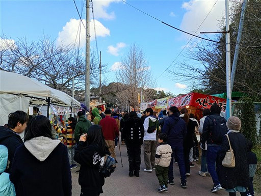
ダム湖を橋で渡る。
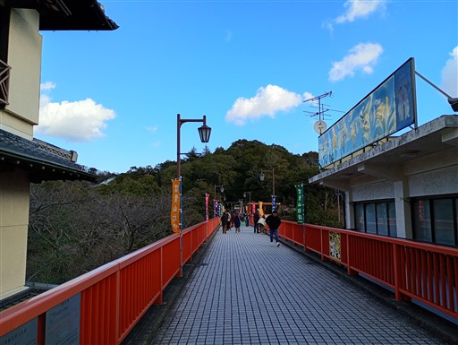
隣に見えるアーチ橋。あちらは車用の橋だ。
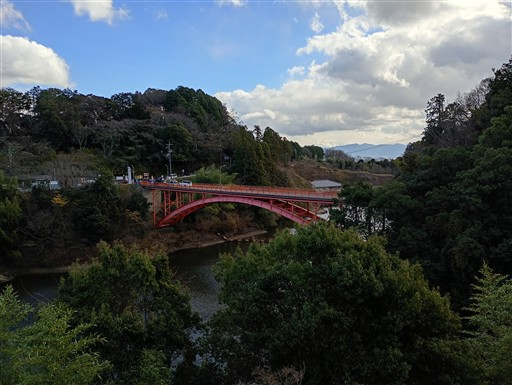
橋からの景色。なかなかの高度感だ。
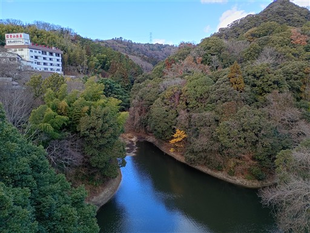
バンジージャンプ台があるが、誰もやっていない。
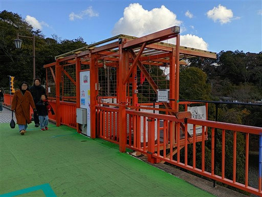
朝護孫子寺に到着。鳥居の先に石灯篭が高密度で並んでいる。
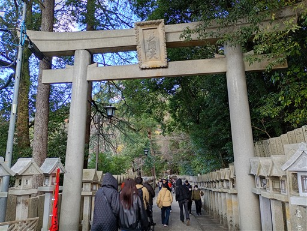
巨大な虎。この寺は虎が守り神だ。
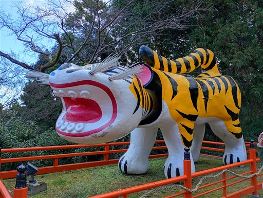
成福院融通殿。結構長い列ができている。
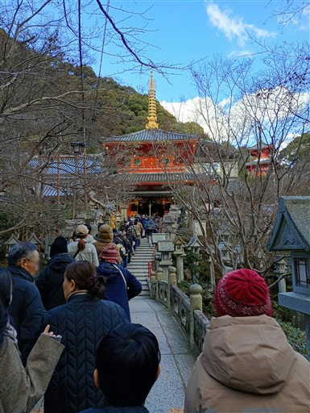
小さな庭と立派な石灯篭。
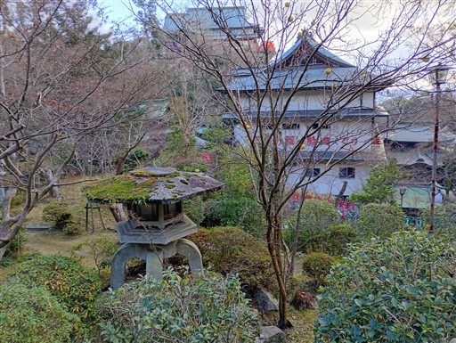
郵便ポストまで虎の柄だ。
虎の寺であることから、阪神タイガースのファンがよく訪れるらしい。
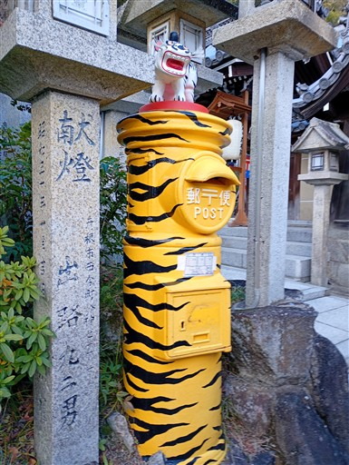
そこそこ階段の多い寺。階段を登って本堂にお参りする。
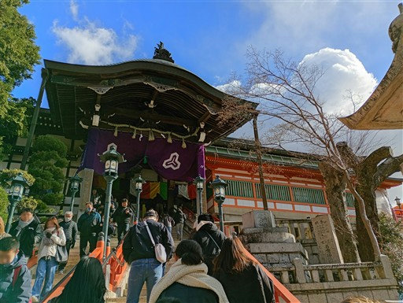
階段の上からの景色。遠く三重塔が見えている。
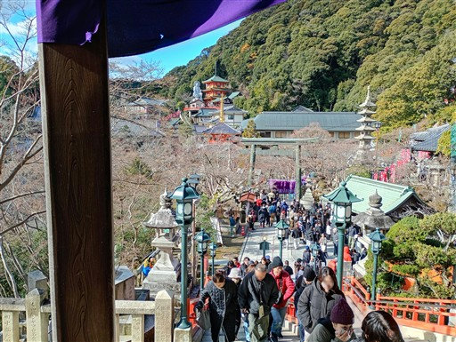
本堂にお参り。本尊は毘沙門天だ。
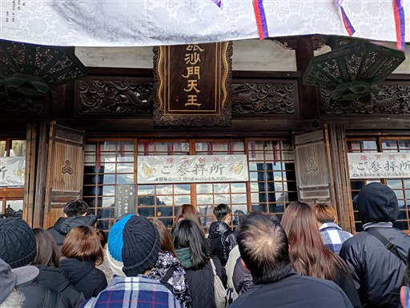
標高の高い位置にある本堂からは、展望が広がる。
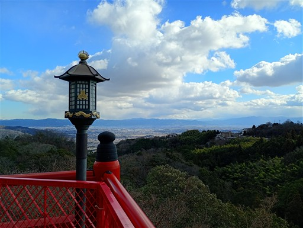
先ほど見えた三重塔に向かう。
本堂に向かうメインロードから外れると、だいぶ人影が薄くなる。
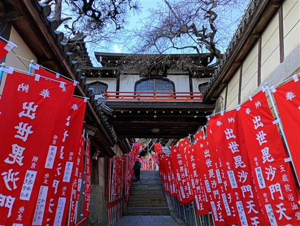
札束をくわえた虎。
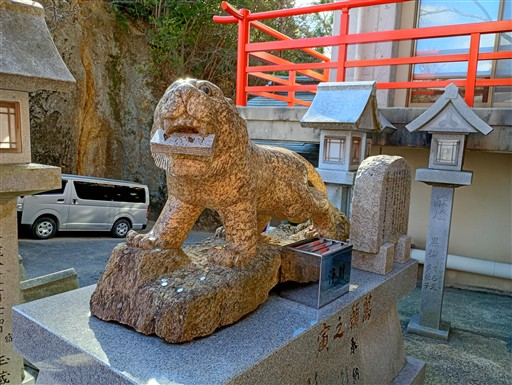
三重塔に到着。新しそうな建物だ。
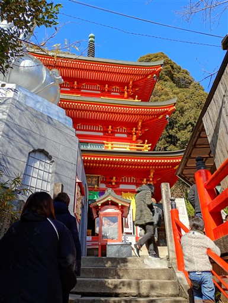
ここで交通安全お守りを購入。
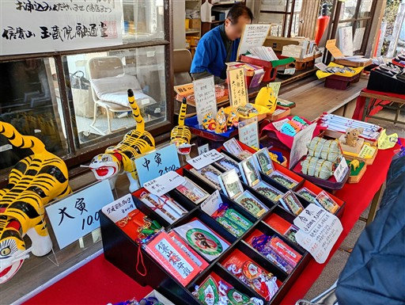
ここからも素晴らしい展望が広がる。奥に見えているのが本堂だ。
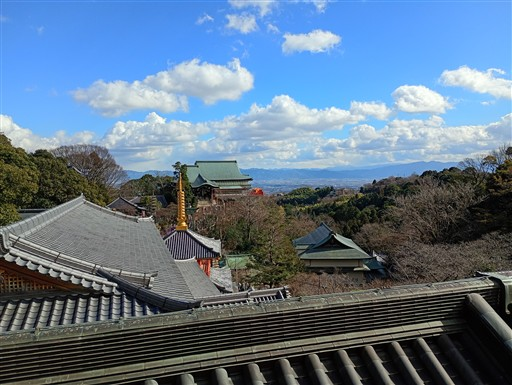
ここから信貴山に登ることができ、選抜メンバーでひとっ走り行ってくる。
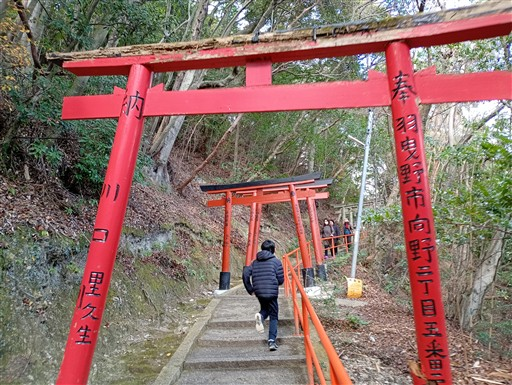
ジグザグの道。思ったより坂道が長く続く。
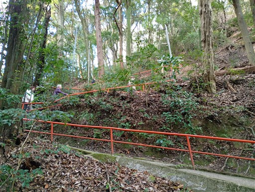
山頂直下。鳥居が多くなってくる。
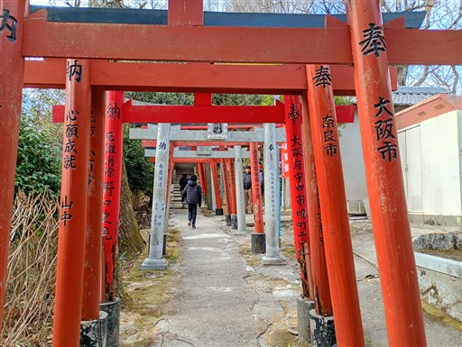
山頂に到着。
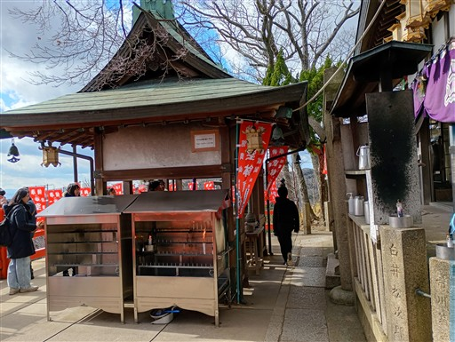
ハクサイやダイコンが供えられている。
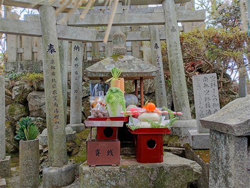
山頂からは素晴らしい展望が広がる。
見えているのは先日登った葛城山や金剛山だ。
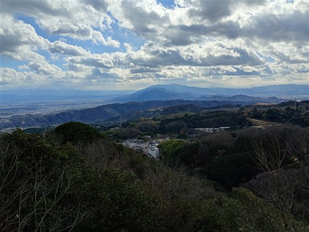
速足で信貴山を下りてくる。下りたところにあるのは多宝塔。
概ね寺院内をぐるっと回ったので、先行組と合流して帰宅する。
かなり寒い日だったが、広い境内を巡れて充実した初詣だった。
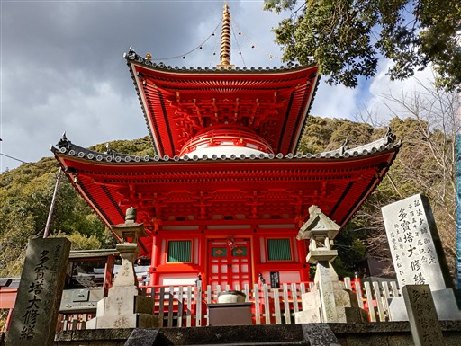